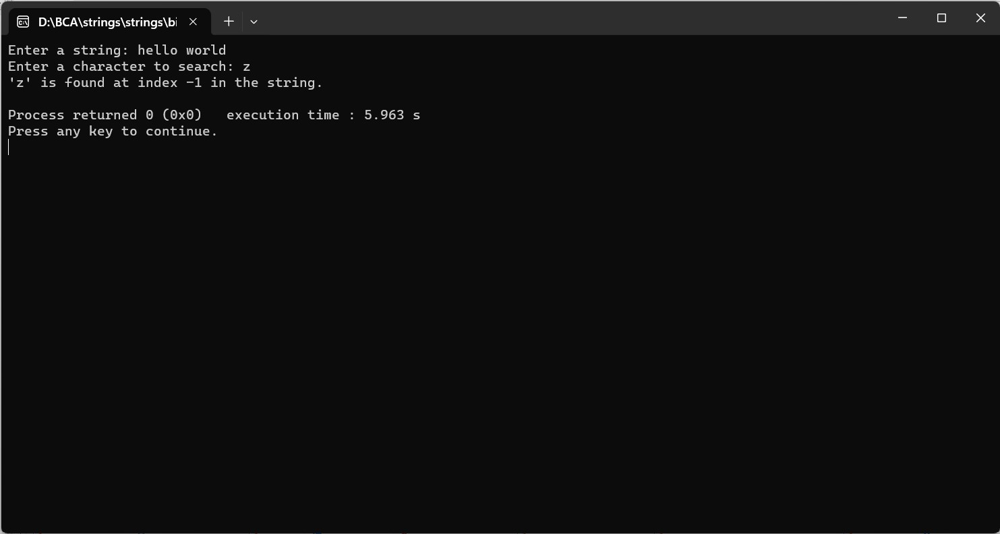

ENTER THE STRING FROM THE USER, ALSO ENTER A CHARACTER AND PRINT THE INDEX OF THE CHARACTER IF IT IS EXIST IN THE STRING ELSE PRINT -1
#include
int main() {
char inputString[1000];
char searchChar;
int found = -1;
printf("Enter a string: ");
fgets(inputString, sizeof(inputString), stdin);
printf("Enter a character to search: ");
scanf(" %c", &searchChar); // Space before %c is used to skip whitespaces or newline characters
// Search for the character in the string
for (int i = 0; inputString[i] != '\0'; i++) {
if (inputString[i] == searchChar) {
found = i;
break;
}
}
printf("'%c' is found at index %d in the string.\n", searchChar, found);
return 0;
}
